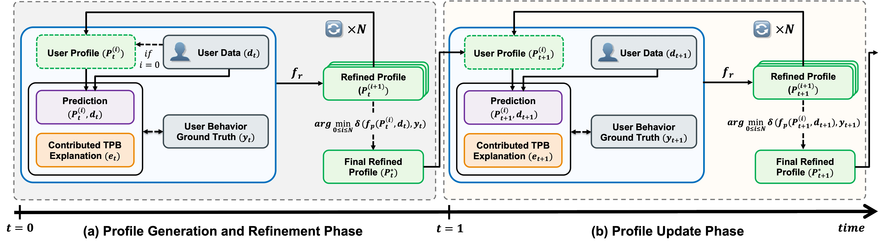

CIKM 2025 · Short paper
Grounding LLM user profiles in the Theory of Planned Behavior improves personalization
Hanyang University · *Corresponding author
LLM-generated user profiles tend to list surface preferences. TRIPLE instead describes each user through the three drivers of intention in the Theory of Planned Behavior: attitude, subjective norm, and perceived behavioral control. It then refines that profile by checking its predictions against what the user actually did, with no additional training.
- First author
- User modeling
- Personalization
FIG. 01
The TRIPLE framework

01 / The problem
Accurate user profiling is still a central challenge for personalized services. LLMs make it possible to describe users in natural language, and recent methods build such profiles from a user's past text.
Surface features, not drivers. These profiles mostly capture favored keywords, styles, or stated preferences. They do not model the latent factors that shape a decision, and they are often static or updated naively.
A theory of why people act. In social psychology, the Theory of Planned Behavior (TPB) holds that behavioral intentions are shaped by a person's attitude toward the behavior, the subjective norms they perceive, and their perceived behavioral control. These are exactly the latent variables that surface-level profiles leave out.
02 / How TRIPLE works
TRIPLE (TPB-dRIven Profiling with LLM rEfinement) uses an LLM to write each of the three TPB components in natural language and keeps them up to date in a cycle of prediction, evaluation, and refinement (FIG. 01). It works with different LLMs and needs no additional training.
Build an initial profile. The LLM reads a user's past text, such as their reviews, and writes their attitude, subjective norm, and perceived behavioral control, stored as structured JSON.
Refine against real behavior. The profile is used to predict the user's behavior. The prediction is compared with what the user actually did, and the error is passed back to the LLM with instructions to adjust the profile. This repeats N times (N = 5 in our experiments), and the best-performing profile is kept.
Update over time. When new data arrives, refinement starts from the previous step's best profile rather than from scratch, so the profile adapts gradually as the user's preferences change.
03 / What we found
We evaluated TRIPLE on two tasks from the LaMP benchmark. In LaMP-3, the model predicts the 1–5 rating a user gives an Amazon product from their review history (2,500 test samples; MAE and RMSE). In LaMP-4, it generates news headlines in a user's style (1,800 test samples; ROUGE-1 and ROUGE-L). Test data is split by time to keep the order of each user's behavior.
Better than existing profiling methods. Across the open-source LLMs we tested, TRIPLE outperformed existing profiling methods in every evaluation setting.
Setup. Experiments ran on 4 NVIDIA A100 GPUs with temperature 0, a maximum of 1,000 tokens to leave room for full TPB descriptions, and up to 5 refinement iterations. All baselines were re-implemented from the prompts in their original papers or official repositories.
04 / One user's profile over time
Because the profile is plain text, you can watch it change. Below, user #9157's TPB profile is updated after each new product review. The user's view of comfort stays positive throughout, while their sense of control over a good purchase drops as sizing and quality problems appear (FIG. 02).
FIG. 02
Case study: user #9157 on LaMP-3
-
Initial profile (Step 0)
Review: "Very comfortable, and warm. Excellent sale, and a fast shipment and receipt."
Attitude is clearly positive about comfort, warmth, and the purchase itself. Perceived behavioral control is high: the fast shipment suggests the user finds buying this product easy.
-
Updated after a sizing issue (Step 1)
Review: "Had to return two pair, because the manufactures shoe last is 1 to 1/2 size smaller than any other foot wear I have, Of the same size."
Attitude becomes cautiously optimistic but marked by real dissatisfaction with fit. Perceived control falls: two returns show that getting a satisfactory product is not straightforward, despite fast delivery.
-
Final updated profile (Step 3)
Review: "The sale was easy, and shipping was fine. These are a very comfortable boot, with apparent strong materials and sewing. While the above is true...so is the fact the Boot sold as water proof LEAKS HORRIBLY Leaving feet soaked from wet grass!"
Attitude is mixed rather than wholly negative: comfort and build are appreciated, but the waterproofing failure weighs heavily. Subjective norm now reflects a felt responsibility to warn other buyers. Perceived control is reduced because the product failed at its main function, even though the transaction went smoothly.
Prompts. For reproducibility, here are the three prompts TRIPLE uses on the rating task.
1. Initial profile generation
You are highly skilled at role-playing. Imagine that you are a top-tier user-profiling expert.
Your goal is to:
- generate a Theory of Planned Behavior (TPB)–based profile of the user.
# General Task Description
The user's past data is provided. This past data consists of reviews the user previously wrote about a specific product.
- Past data [review]: {history}
# Task Instructions
Your task is to take the [review] as input and create a TPB-based profile of the user.
- The Theory of Planned Behavior is designed to explain and predict human behavior.
- The user's profile must be composed of the main TPB components. Read each component's definition carefully and populate it with information drawn from the user's past data.
- Please write the profile solely with "Attitude", "Subjective norm", "Perceived Behavioral Control" presented in narrative form.
# Profile components:
- Attitude
- Definition: The user's positive or negative evaluation of performing the specific behavior.
- Subjective norm
- Definition: The social pressure the user perceives to perform or not perform the behavior.
- Perceived Behavioral Control
- Definition: The user's perception of how easy or difficult it is to perform the behavior, reflecting past experience as well as anticipated
First, you must develop your reasoning according to [Profiler Thought]. Follow the step-by-step guide below, and write your response in JSON format using the specified field names.
# Profiler Thought
1. Understand what information is contained in [review].
2. Identify which parts of [review] map to the TPB profile components.
3. Write the profile. Do not change the names of the profile components.
4. Each component must not exceed two sentences.
# Output Format
Respond in the following JSON format:
{{
"attitude": "...",
"subjective_norm": "...",
"perceived_behavioral_control": "..."
}}
Start the profiling
Begin the profiling task now! Strictly follow [Task Instructions] and output your response in JSON format.2. Behavior prediction
You are highly skilled at role-playing. Imagine you are an expert rating predictor.
Your goal:
- Predict a rating between 1.0 – 5.0 based on the user profile and review content.
# General Task Description
You are given:
- A user profile based on the Theory of Planned Behavior [profile]: {profile}
- A specific user review [review]: {review}
# Task Instructions
Using the given [profile], understand the user and predict the rating they would give to the [review]. First, structure your thinking according to the [Predictor Thought] steps below. Follow the steps carefully and respond in JSON format using the exact field names provided.
# Predictor Thought
1. Profile Analysis: Understand the provided [profile].
2. Component Relationship Analysis: According to TPB theory, determine the user’s intention—the degree to which they decide to perform a behavior—by considering the combination of Attitude, Subjective Norm, and Perceived Behavioral Control.
3. Review Analysis: Understand the review written by the user.
4. Prediction: Integrate insights from the profile and review to predict the most likely integer rating between 1–5.
5. Explanation: Clearly state the reasoning for your prediction in the [explanation] field.
# Output Format
Respond in the following JSON format:
{{
"explanation": "...",
"rating": "..."
}}
# Start the Prediction
Begin the rating prediction task now! Strictly follow the [Task Instructions] and respond in the specified JSON format.3. Profile refinement
You are highly skilled at role-playing. Imagine that you are a top-tier refinement expert.
Your goal is to:
- Refinement the user's TPB-based profile.
# General Task Description
The user's past data is provided. This past data consists of reviews the user previously wrote about a specific product.
- Past data [review]: {history}
- Rating attached to the review [ground truth]: {gt}
- User's Theory of Planned Behavior-based profile [profile]: {profile}
- Predicted rating based on the profile [prediction]: {pred}
- Basis for the predicted rating [explanation]: {explanation}
# Task Instructions
Your task is to refine the TPB-based [profile] to reduce the discrepancy between [prediction] and [ground truth] based on the grounds provided in [explanation].
First, you must develop your thinking as specified in [Refiner Thought]. Follow the step-by-step guide below, and write your response in JSON format using the specified field names.
# Refiner Thought
1. Understand how the prediction deviated from the ground truth by comparing [prediction] and [ground truth].
2. Identify which aspects of the [profile] might have contributed to this discrepancy based on [explanation].
3. Decide on the direction of refinement.
- [prediction] > [ground truth]:
- The user's attitude may have been overestimated, so soften positive expressions or incorporate more negative/neutral cues.
- Check whether social pressure (Subjective Norm) or perceived behavioral control (PBC) has been described higher than in reality, and modestly adjust them if necessary.
- [prediction] < [ground truth]:
- The user's attitude may have been underestimated, so emphasize positive experiences and satisfaction factors.
- Strengthen the surrounding positive influence (Subjective Norm) or the perceived control (PBC) derived from successful experiences, adding grounds for the user to give a higher rating.
4. Do not include exact numeric values ([ground truth]) in the refined [profile].
5. Each component of the refined [profile] must not exceed two sentences.
# Output Format
Respond in the following JSON format:
{{
"attitude": "...",
"subjective_norm": "...",
"perceived_behavioral_control": "..."
}}
# Start the Refinement
Now begin your Refinement task! You should format your response strictly following the [Task Instructions]. Output the result in JSON format.05 / Publication
- Title
- Externalizing Social-Cognitive Structures for User Modeling: Toward Theory-Driven Profiling with LLMs
- Authors
- Taehyung Noh, Seungwan Jin, Haein Yeo, Kyungsik Han
- Venue
- Proceedings of the 34th ACM International Conference on Information and Knowledge Management (CIKM '25), short paper
- Paper
- ACM Digital Library
- Video
- YouTube
@inproceedings{noh2025triple,
author = {Noh, Taehyung and Jin, Seungwan and Yeo, Haein and Han, Kyungsik},
title = {Externalizing Social-Cognitive Structures for User Modeling: Toward Theory-Driven Profiling with LLMs},
booktitle = {Proceedings of the 34th ACM International Conference on Information and Knowledge Management (CIKM '25)},
year = {2025},
month = {November},
publisher = {ACM},
doi = {10.1145/3746252.3760965},
}